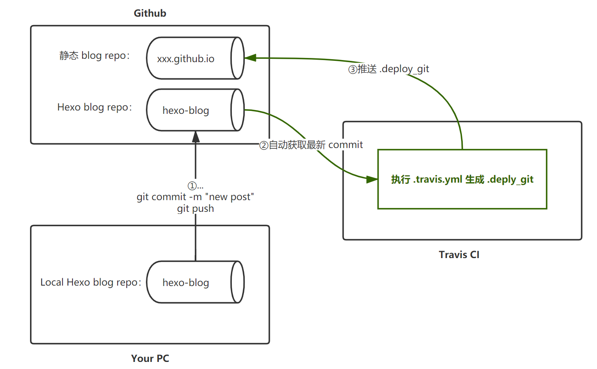
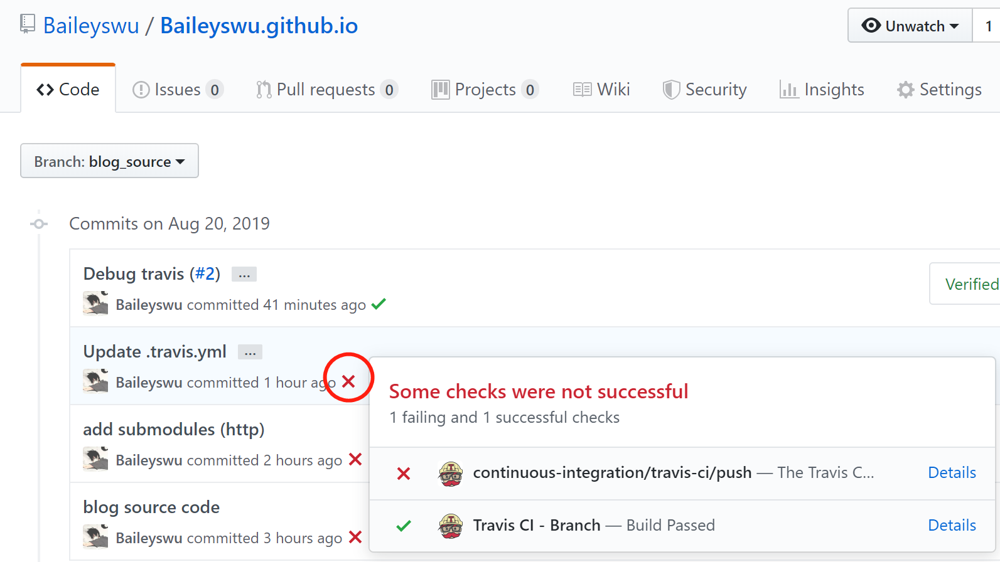

Background
好久没写博客了。不是不想写，而是每次想写的时候，都要在本地配置好 Hexo，生成网页以后再上传。有 Linux 还好，如果是 Windows 下，又要忙活着配置了。再加上设备比较多的情况下，不至于每台电脑都要配置吧o((⊙﹏⊙))o. 我构思过以下几种办法：
- 把想法存档到 markdown，等到需要的时候再一股脑转换成 blog。
- 搞一台服务器，在上面装好所有环境，连上去编译。
直到有一天，我在一个别人的 github 项目 里 pull request，发现在 merge 以前，可以自动跑一堆测试。只有完成测试以及 code review 这两个必要条件以后，才能考虑是否 merge （然而这个大佬并不想 merge 我的代码并把我怼了）。于是！我发现了一个好东西 Travis CI !
Operating Mechanism
借用 这个说明 里的图片 
可以发现 Travis CI 给我们提供了一个跑 Hexo 的地方，使得我们的编辑更加轻松。
只要在你的 Github Repo 里包含 .travis.yml，关联到 Travis CI 以后便可以自行识别。你可以选择在每次更新分支或提 PR 的时候去跑 .travis.yml 里的脚本。
给一段脚本如下，最新版本在这里1
2
3
4
5
6
7
8
9
10
11
12
13
14
15
16
17
18
19
20
21
22
23
24
25
26
27
28
29
30
31
32
33
34
35
36
37# .travis.yml
language: node_js
node_js:
- "10"
dist: trusty
sudo: required
cache:
directories:
- node_modules
branches:
# 除了 master 分支，其余分支在更新后都会有所动作，比如 deploy html.
except:
- master
before_install:
- git config --global user.name "Baileyswu"
- git config --global user.email "wulidan0530@live.com"
# 下面是为了把 _config.yml 里的 git@github.com 替换成 https://${ACCESS_TOKEN}@github.com/
# ACCESS_TOKEN 是在 Travis CI 上登记的环境变量，用于存放 Github 里生成的 Personal access tokens
# 这样你就不需要在 Travis CI 的虚拟机里放自己的私钥了
- sed -i'' "s~git@github.com:~https://${ACCESS_TOKEN}@github.com/~" _config.yml
install:
- cat ./npm-init.sh
- chmod 755 ./npm-init.sh
- source ./npm-init.sh
- ls
# 这里是为了让数学公式表达正常修改的正则表达式
- cp -f ./kramed-inline.js node_modules/kramed/lib/rules/inline.js
script:
# 上一次生成的静态博客文件都在 master 分支里，将它保存到 .deploy_git 内
# 可以避免每次 deploy 都把原先的 log 清空
- git clone --branch master https://github.com/Baileyswu/Baileyswu.github.io.git .deploy_git
- npm run deploy
每次 commmit 都可以看见如下效果

Debug Travis CI Failure
travis.com != travis.org
没错，他们不是同一个网站(￣▽￣)”……所以 Personal access tokens 要在两个网站都填好内！
Deploy conflict
也许你会觉得这行拷贝是多余的……1
git clone --branch master https://github.com/Baileyswu/Baileyswu.github.io.git .deploy_git
如果你又不小心选择了 Travis CI 下的这两个选项
General
- Build pushed branches
- Build pushed pull requests
那么悲剧就发生了……
两个进程在同一时刻 clone 了代码，分别 deploy，其中肯定有一个先完成，然后被 push 到了 master。当慢的那个也完成了以后刚要 push 就傻眼了。我上一个版本不是 xxx 吗，怎么变成了 yyy，于是它拒绝 push，于是 deploy 失败。
所以解决办法就是，每次要 deploy 前先更新一下最近的静态网页。或者不要两个进程一起开。如果确实不需要保留静态文件的历史，直接 git fetch 也没啥大问题。